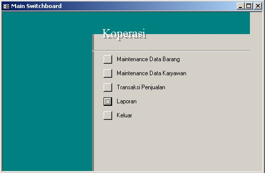
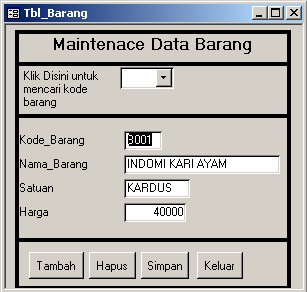
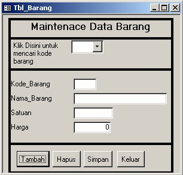
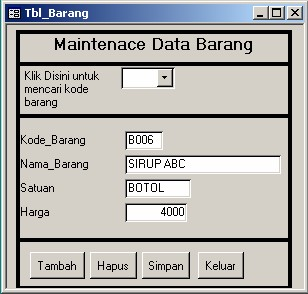
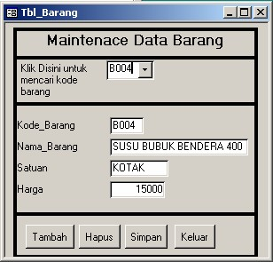
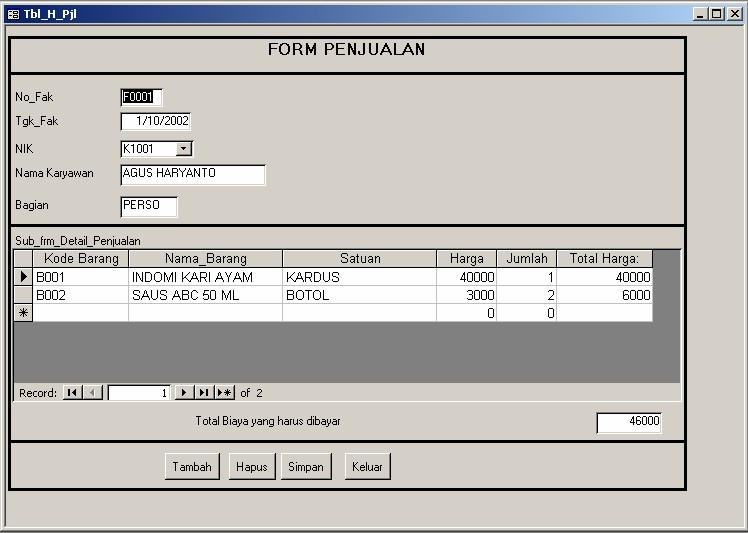
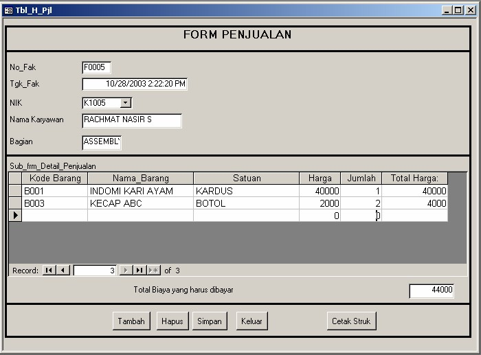
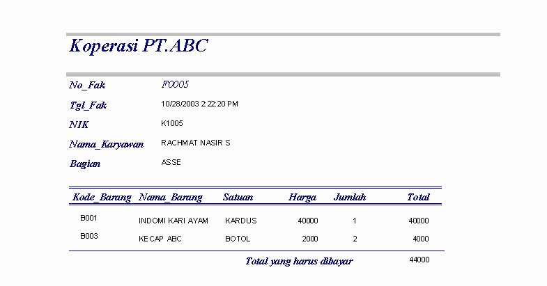
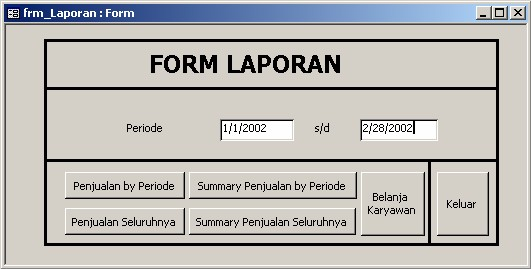
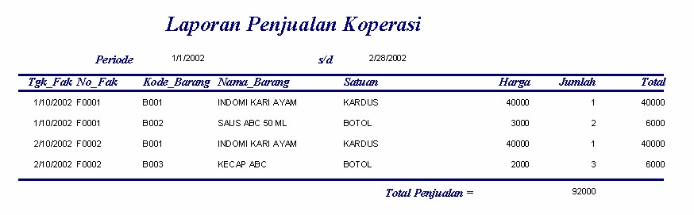

1. Jalankan Aplikasi. Akan muncul Menu Utama
2. 
3. Jika ingin menambah, menghapus atau mengedit data barang, klik tombol Maintenance Data Barang.

Akan tampil Form Maintenance Data Barang. (Pada saat pertama tampil maka from akan menmpilkan record pertama dari data barang untuk itu anda tidak boleh merubah isinya, jika dirubah maka otomatis isi record pertama akan berubah)
Menambah Data Barang
1. Klik Tombol Tambah, Lalu Isi Kode Barang, Nama Barang dan satuan dan harga. Isi saja seperti contoh dibawah ini


penambahn data sudah selesai klik tombol simpan. Untuk meyakinkan bahwa data bahwa data yang kita masukan tadi sudah tersimpan, lihat pada table barang.
Menghapus Data Barang
1. Pilih dulu Kode Barang yang akan di hapus, caranya klik Combo Box Kode barang , kemudian pilh kode Barangnya misalnya saja B004, maka data-data B004 akan ditampilkan di Form

2. Klik Tombol Hapus, akan muncul pesan "You Are Delete 1 Records ?.." Jika anda benar-benar ingin meghapusnya klik Yes, jika tidak klik No.
Untuk kembali kemenu utama klik tombol keluar.
4. Jika ingin menambah, menghapus atau mengedit data karywan, klik tombol Maintenance Data Karyawan. Akan tampil Form Data karyawan, cara pengoperasiannya sam seperti form Maintenance Data Barang.
5. Jika Ingin melakukan Transaksi Penjualan klik tombol Transaksi Penjualan Akan tampil Form Maintenance Data Barang. (Pada saat pertama tampil maka from akan menmpilkan record pertama dari data barang untuk itu anda tidak boleh merubah isinya, jika dirubah maka otomatis isi record pertama akan berubah)

Jika ingin melakukan transaksi penjualan baru klik tombol tambah. Kemudian Isi No_fak, NIK, Kode Barang, field-field lainnya sudah otomatis terisi.

Untuk mencetak struk klik tombol Cetak Struk

Jika ingin melakukan transaksi penjualan lagi, klik lagi tombol tambah. Setalah selesai jangan lupa untuk mengklik tombol Simpan
Untuk Mencetak Laporan, klik tombol Laporan, akan tampil form laporan, isi Periodenya kemudian klik salah satu tombol untuk report/alporan yang diinginkan.

Misalnya saja kita klik tombol Penjualan by Periode, maka Laporan penjualan koperasi selama periode

Copyright © Herlan Lesmana
Created with the Freeware Edition of HelpNDoc: Full featured multi-format Help generator